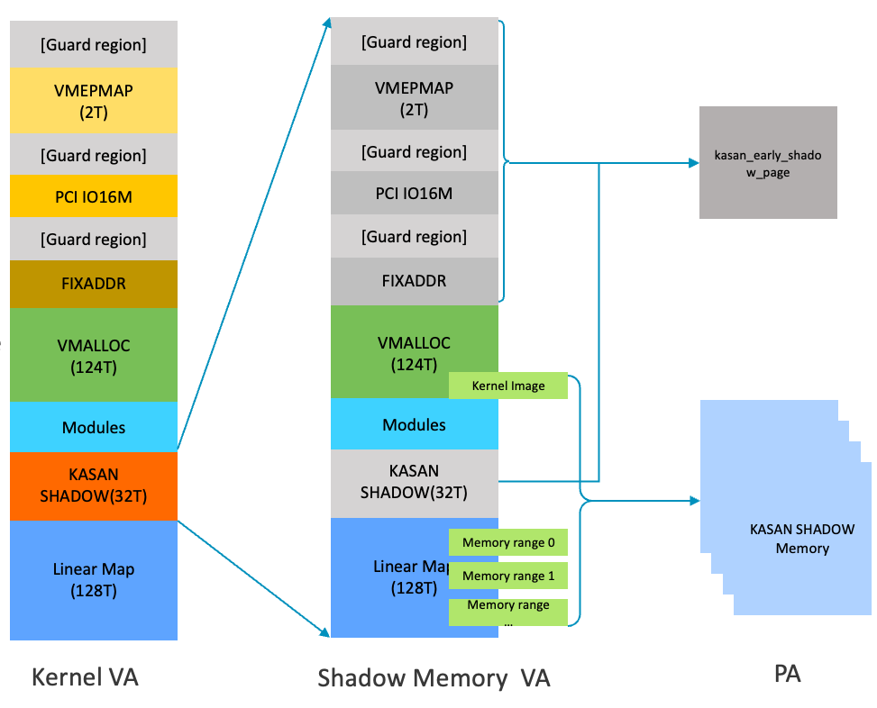

Generic KASAN是不需要硬件支持的， Software Tag-Based KASAN和Hardware Tag-Based KASAN 是需要硬件提供支持。
Software Tag-Based KASAN和Hardware Tag-Based KASAN 目前支持arm64的系统，需要地址支持TBI（top byte ignore),因为它的tag是放在地址的高位，所以TBI的支持。
Shadow memory
为了检测内存的越界访问，Generic和Software Tag-Based KASAN是需要提供影子内存的，Hardware Tag-Based KASAN因为有MTE的支持，硬件已经有存放Tag的地方，就不需要软件来支持。
参考如下虚拟内存布局：
Start End Size Use
-----------------------------------------------------------------------
0000000000000000 0000ffffffffffff 256TB user
ffff000000000000 ffff7fffffffffff 128TB kernel logical memory map
[ffff600000000000 ffff7fffffffffff] 32TB [kasan shadow region]
ffff800000000000 ffff80007fffffff 2GB modules
ffff800080000000 fffffbffefffffff 124TB vmalloc
fffffbfff0000000 fffffbfffdffffff 224MB fixed mappings (top down)
fffffbfffe000000 fffffbfffe7fffff 8MB [guard region]
fffffbfffe800000 fffffbffff7fffff 16MB PCI I/O space
fffffbffff800000 fffffbffffffffff 8MB [guard region]
fffffc0000000000 fffffdffffffffff 2TB vmemmap
fffffe0000000000 ffffffffffffffff 2TB [guard region]
Kernel系统里面所有的虚拟地址，都可以在kasan shadow region 找到对应的地址和它一一对应。一个VA可以通过下面的函数找到它对应的 kasan shadow的地址：
static inline void *kasan_mem_to_shadow(const void *addr)
{
return (void *)((unsigned long)addr >> KASAN_SHADOW_SCALE_SHIFT)
+ KASAN_SHADOW_OFFSET;
}
但是32T的kasan shadow region 不可能都有物理地址和它对应。
所以系统里面只给 kernel logical memory map里面已经online的memory bank 给它分配kasan shadow region里面的物理内存，还有就是vmalloc 里面的kernel image对应的部分VA对应的kasan shadow region分配物理内存。
其他别的虚拟地址都把他们的 kasan shadow region 映射成一个共同的物理页kasan_early_shadow_page， 这样就不需要那么多kasan shadow 物理内存了。 参考如下：

对于vmalloc区域，因为它的VA地址是动态分配的，所以系统boot起来是不会静态给它的kasan shadow region分配物理内存。 只有真正分配VA的时候才给映射kasan shadow region 的物理内存，可以参考如下函数：
int kasan_populate_vmalloc(unsigned long addr, unsigned long size)
void kasan_release_vmalloc(unsigned long start, unsigned long end,
unsigned long free_region_start,
unsigned long free_region_end)
非法访问检查
KASAN是在使用指针访问内存的时候，提前检测这个指针的状态是不是合法。
对于Generic和Software Tag-Based KASAN， 就依赖编译器在在访问内存的时候插入相对应的代码去检查这个指针对应的kasan shadow memory里面的值是不是合法，如我们有如下代码：
if(test[idx] == 0){
pr_info("test = %d \n",test[idx]);
}else{
pr_info("test2 = %d \n",test[idx]);
}
Generic KASAN 编译器会产生如下代码：
40: aa1303e0 mov x0, x19
44: 94000000 bl 0 <__asan_load4_noabort>
48: b9400261 ldr w1, [x19]
4c: 35000081 cbnz w1, 5c <global_test+0x5c>
50: 90000000 adrp x0, 0 <global_test>
54: 91000000 add x0, x0, #0x0
58: 14000003 b 64 <global_test+0x64>
5c: 90000000 adrp x0, 0 <global_test>
60: 91000000 add x0, x0, #0x0
64: 94000000 bl 0 <_printk>
Software Tag-Based KASAN 编译器会产生如下代码：
EL2N:0x00000000840E3FA0 : LSR x9,x8,#4
EL2N:0x00000000840E3FA4 : LSR x8,x0,#56
EL2N:0x00000000840E3FA8 : LDRB w9,[x19,x9]
EL2N:0x00000000840E3FAC : CMP w8,w9
EL2N:0x00000000840E3FB0 : B.EQ global_test+152 ; 0x840E3FBC
EL2N:0x00000000840E3FB4 : CMP w8,#0xff
EL2N:0x00000000840E3FB8 : B.NE global_test+400 ; 0x840E40B4 /// check first
EL2N:0x00000000840E3FBC : ADRP x8,{pc}+0xf51000 ; 0x85034FBC
EL2N:0x00000000840E3FC0 : LDR w8,[x8,#0x7e0]
//....
EL2N:0x00000000840E40B4 : MOV x9,x19
EL2N:0x00000000840E40B8 : BL __hwasan_check_x0_67043362 ; 0x80215390
EL2N:0x00000000840E40BC : B global_test+152 ; 0x840E3FBC
EL2N:0x00000000840E40C0 : MOV x9,x19
EL2N:0x00000000840E40C4 : BL __hwasan_check_x0_67043378 ; 0x80215420
EL2N:0x00000000840E40C8 : B global_test+196 ; 0x840E3FE8
EL2N:0x00000000840E40CC : MOV x9,x19
EL2N:0x00000000840E40D0 : BL __hwasan_check_x1_67043360 ; 0x80215960
EL2N:0x00000000840E40D4 : B global_test+244 ; 0x840E4018
EL2N:0x00000000840E40D8 : BL __stack_chk_fail ; 0x835A6A4C
EL2N:0x0000000080215390 <__hwasan_check_x0_67043362>: SBFX x16,x0,#4,#52
EL2N:0x0000000080215394 <__hwasan_check_x0_67043362+4>: LDRB w16,[x9,x16]
EL2N:0x0000000080215398 <__hwasan_check_x0_67043362+8>: CMP x16,x0,LSR #56
EL2N:0x000000008021539C <__hwasan_check_x0_67043362+12>: B.NE __hwasan_check_x0_67043362+20 ; 0x802153A4
EL2N:0x00000000802153A0 <__hwasan_check_x0_67043362+16>: RET
EL2N:0x00000000802153A4 <__hwasan_check_x0_67043362+20>: LSR x17,x0,#56
EL2N:0x00000000802153A8 <__hwasan_check_x0_67043362+24>: CMP x17,#0xff
EL2N:0x00000000802153AC <__hwasan_check_x0_67043362+28>: B.EQ __hwasan_check_x0_67043362+16 ; 0x802153A0
EL2N:0x00000000802153B0 <__hwasan_check_x0_67043362+32>: STP x0,x1,[sp,#-0x100]!
EL2N:0x00000000802153B4 <__hwasan_check_x0_67043362+36>: STP x29,x30,[sp,#0xe8]
EL2N:0x00000000802153B8 <__hwasan_check_x0_67043362+40>: MOV x1,#0x22
EL2N:0x00000000802153BC <__hwasan_check_x0_67043362+44>: B __hwasan_tag_mismatch ; 0x811C6608
至于Hardware Tag-Based KASAN 时使用MTE的硬件机制来进行检测。 就没有额外检测代码。
这也就是Hardware Tag-Based KASAN 基本不会增加kernel image 的大小，而Generic和Software Tag-Based KASAN会增加 kernel image 的大小。
根据测试，大概Generic KASAN 会增加2-3倍大小，而Software Tag-Based KASAN 1.5-2倍大小。
测试例子
有如下函数：
__attribute__((__noinline__)) static void kmalloc_test_err(void)
{
int *kmem;
int *kmem1;
pr_info("%s \n",__FUNCTION__);
kmem = kmalloc(20, GFP_KERNEL);
kmem[0] = 'c';
kmem1 = kmalloc(20, GFP_KERNEL);
if( kmem[idx] == 0){
pr_info("kmem1 = %c \n",kmem[idx]);
}else{
pr_info("kmem2 = %c \n",kmem1[idx]);
}
}
运行时会出现如下错误：
[ 807.832972] ==================================================================
[ 807.838615] BUG: KASAN: invalid-access in kmalloc_test_err+0x5c/0x94 [kasan_my_test]
[ 807.838844] Read at addr fcffff880000ff34 by task modprobe/149
[ 807.838937] Pointer tag: [fc], memory tag: [fe]
[ 807.839009]
[ 807.839055] CPU: 0 PID: 149 Comm: modprobe Not tainted 6.6.0-dirty #74
[ 807.839170] Hardware name: FVP Base RevC (DT)
[ 807.839238] Call trace:
[ 807.839291] dump_backtrace+0xf0/0x128
[ 807.839428] show_stack+0x18/0x24
[ 807.839561] dump_stack_lvl+0x50/0x68
[ 807.839667] print_report+0x1bc/0x724
[ 807.839770] kasan_report+0xa8/0x100
[ 807.839874] __do_kernel_fault+0xb0/0x1dc
[ 807.839997] do_bad_area+0x30/0xdc
[ 807.840115] do_tag_check_fault+0x20/0x30
[ 807.840238] do_mem_abort+0x40/0xec
[ 807.840355] el1_abort+0x3c/0x5c
[ 807.840458] el1h_64_sync_handler+0x80/0xcc
[ 807.840571] el1h_64_sync+0x64/0x68
[ 807.840670] kmalloc_test_err+0x5c/0x94 [kasan_my_test]
[ 807.840885] init_module+0x5c/0x1000 [kasan_my_test]
[ 807.841099] do_one_initcall+0xdc/0x250
[ 807.841203] do_init_module+0x58/0x27c
[ 807.841312] load_module+0x15c8/0x186c
[ 807.841420] __arm64_sys_finit_module+0x214/0x2c0
[ 807.841533] invoke_syscall+0x40/0x100
[ 807.841663] el0_svc_common+0xa8/0xd8
[ 807.841793] do_el0_svc+0x1c/0x28
[ 807.841920] el0_svc+0x38/0x68
[ 807.842024] el0t_64_sync_handler+0x90/0xfc
[ 807.842138] el0t_64_sync+0x19c/0x1a0
[ 807.842239]
[ 807.842281] The buggy address belongs to the object at ffffff880000ff20
[ 807.842281] which belongs to the cache kmalloc-32 of size 32
[ 807.842399] The buggy address is located 20 bytes inside of
[ 807.842399] 32-byte region [ffffff880000ff20, ffffff880000ff40)
[ 807.842531]
[ 807.842575] The buggy address belongs to the physical page:
[ 807.842639] page:(____ptrval____) refcount:1 mapcount:0 mapping:0000000000000000 index:0xf6ffff880000faa0 pfn:0x88000f
[ 807.842769] flags: 0xbfffe0000000800(slab|node=0|zone=2|lastcpupid=0x1ffff|kasantag=0x0)
[ 807.842881] page_type: 0xffffffff()
[ 807.842978] raw: 0bfffe0000000800 fcffff8800002300 dead000000000122 0000000000000000
[ 807.843099] raw: f6ffff880000faa0 0000000080800075 00000001ffffffff 0000000000000000
[ 807.843188] page dumped because: kasan: bad access detected
[ 807.843302] Memory state around the buggy address:
[ 807.843375] ffffff880000fd00: f7 f7 fb fb f0 f0 f0 f0 fd fd fb fb f8 f8 f8 f8
[ 807.843476] ffffff880000fe00: f1 f1 fc fc fc fc f9 f9 fb fb fd fd fd fd fc fc
[ 807.843577] >ffffff880000ff00: fc fc fe fe fe fe fe fe fe fe fe fe fe fe fe fe
[ 807.843663] ^
[ 807.843742] ffffff8800010000: f0 f0 f0 f0 f0 f0 f0 f0 f0 fe fe fe f4 f4 f4 f4
[ 807.843843] ffffff8800010100: f4 f4 f4 f4 f4 f4 f4 f4 f9 f9 f9 f9 f9 f9 f9 f9
[ 807.843930] ==================================================================
注意事项
- 并不是所有的越界都能被检测出来，这三个KASAN模式都一样。
Generic KASAN是依赖于redzone和shadow memory 里面的值，如果指针恰好越界到 shadow memory 里面的值正好是0，这个时候指针也是可以正常访问，而不会报错。 但是因为Generic KASAN在分配memory 两端加了一个REDZONE，所以比较小的越界是比较容易检测出来的。这也是大部分越界的情况。
Software 和Hardware Tag-Based KASAN 因为使用了非常有限的tag，所以tag也会出现冲突，如果使用这个指针访问的内存，正好它的tag跟这个指针的tag一致，也是可以直接访问的，错误也是有可能检测不出来的。
- 如果要enable stack checking 的话，需要使用到clang来编译kernel，gcc 不会显示stack checking 的选项。
make -C src/linux ARCH=arm64 CC=tools/clang+llvm-18.1.8-x86_64-linux-gnu-ubuntu-18.04/bin/clang CROSS_COMPILE=tools/arm-gnu-toolchain-13.2.Rel1-x86_64-aarch64-none-linux-gnu/bin/aarch64-none-linux-gnu- menuconfig
- 如果需要enable Hardware Tag-Based KASAN，在编译TF-A的时候需要打开如下选项：
- 如果使用FVP_Base_RevC FVP平台来测试 Hardware Tag-Based KASAN，运行时还需要加如下选项：
-C cluster0.memory_tagging_support_level=4 \
-C cluster1.memory_tagging_support_level=4 \
-C bp.dram_metadata.is_enabled=1 \